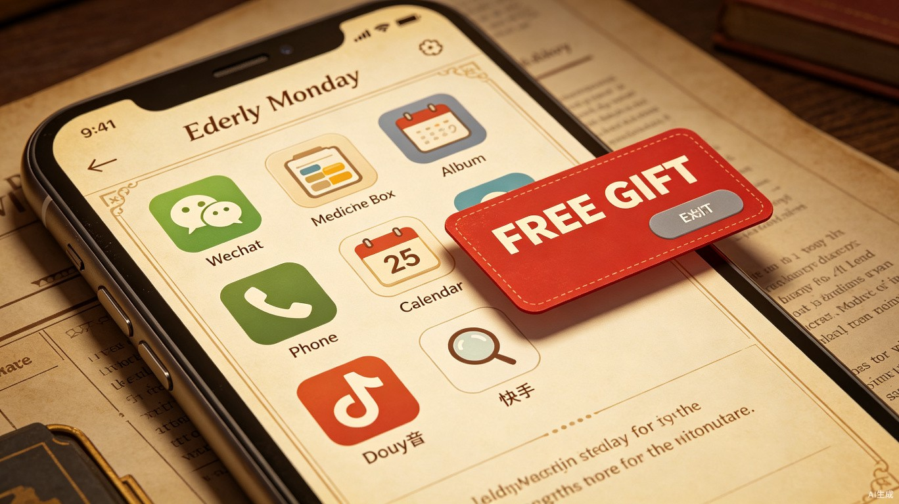
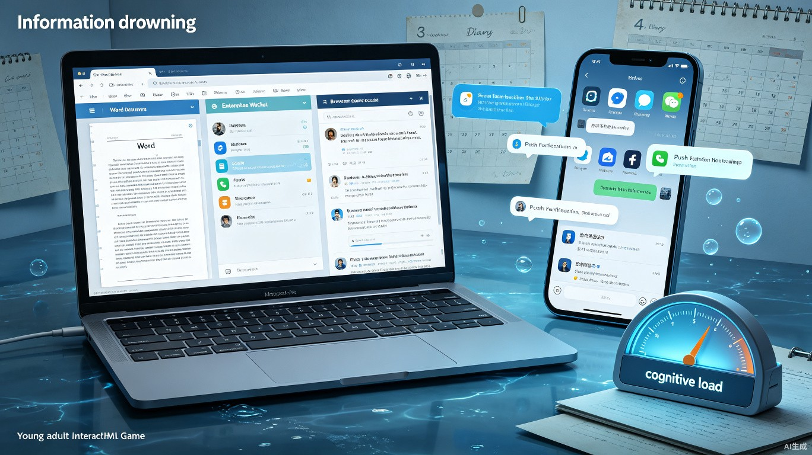
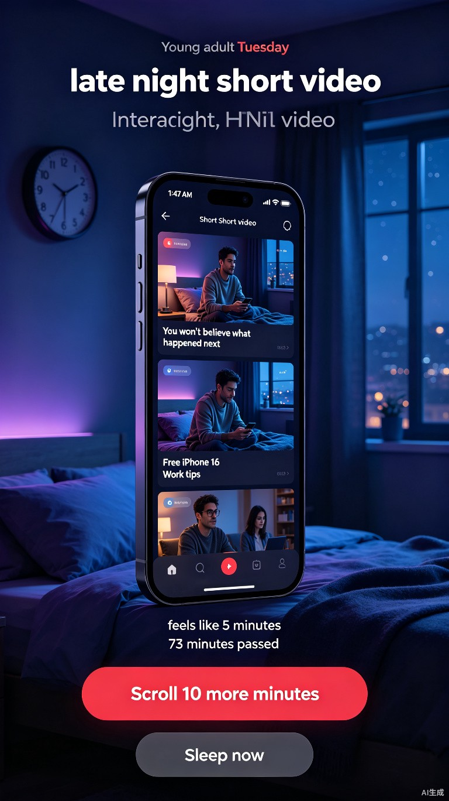
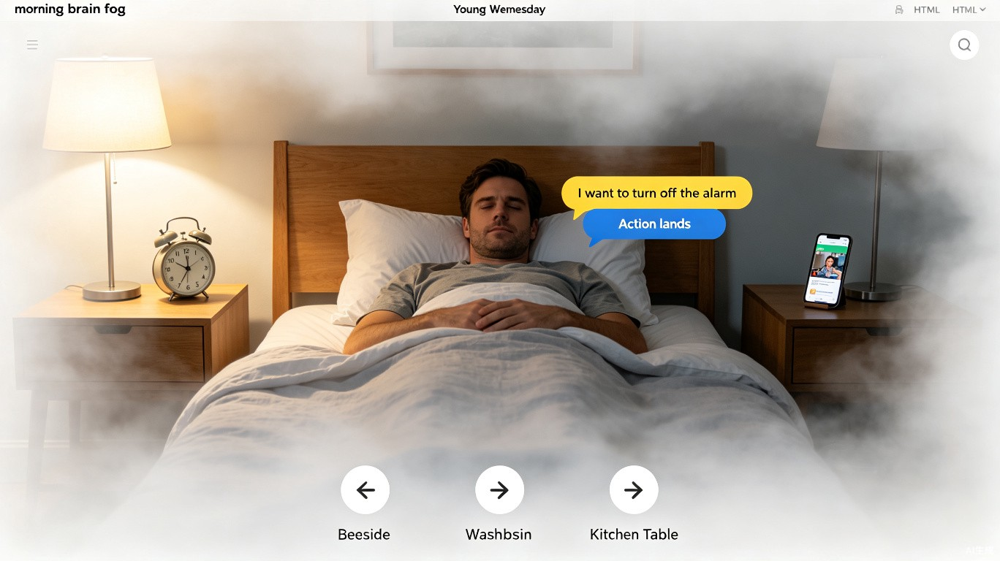

今天是星期几
脑健康公益互动叙事 Demo 说明文档
一、Demo 简介
产品形态
一个基于 HTML/CSS/JS 的单页互动叙事体验，没有后端，没有数值系统。玩家先以老人视角沉浸式体验认知衰退的日常，再以年轻人视角经历信息过载、深夜短视频和晨间脑雾。双视角形成情感递进——不是被告知"脑健康很重要"，而是先成为那个困惑的老人，再回头看自己的生活方式。
一句话概括：先让你体验老人如何艰难地完成一件"简单的事"，再让你意识到自己每天都在做加速这个过程的事。
面向谁
核心用户是 20-40 岁的都市年轻人。他们每天被工作信息轰炸、深夜刷手机、感觉记忆力下降，但内心认定"脑健康是老了才需要关心的事"。Demo 的目标不是教育他们，而是让他们在 5-8 分钟的游戏体验中，自发产生"原来我现在就在经历这些"的觉察。
主要功能
功能一：老人视角 — 认知衰退沉浸式体验
周一到周三，玩家扮演一位退休老人，在认知逐渐变弱的日常中完成基础任务。
- 周一 · 大字手机模拟器：用一台大字模式手机确认药盒、回复女儿、保存家人照片、设置提醒。诈骗弹窗用红色大按钮诱导点击，灰色小按钮才是安全出口。
- 周二 · 面孔修复师：客厅里坐着老伴、女儿和孙子，面孔被碎玻璃覆盖。按住鼠标才能短暂看到清晰五官，观察后从名字池拖拽匹配。物件线索（红围巾、砚台、作业本）比脸更可靠。
- 周三 · 归途导航：根据女儿纸条上的生活化线索（歪脖子路灯、豆腐坊肉香、茶馆童谣、楼道口黄灯），用 WASD 在循环街道上找回家。感官信任条会随迷路逐渐耗尽。

图 1：老人视角 · 周一手机模拟器 — 大字模式界面与诈骗弹窗
功能二：年轻人视角 — 三天脑健康警醒
年轻人线截断为三天，每一天都对应一种真实存在的认知威胁。
- 周一 · 信息溺亡：电脑屏幕（Word + 企业微信 + 浏览器）和手机并排。玩家需要在企业微信消息、浏览器搜索结果和手机推送中收集证据，按"数据 / 问题 / 执行"分类。认知负荷条在右下角缓慢升高，过高会触发强制短休。
- 周二 · 深夜短视频：手机短视频 Feed 不断滚动，玩家感觉只刷了一小会儿，真实时间却已深夜。记住最后 2 个视频，前面 5 个已经模糊。最后面临选择："现在关屏睡觉"或"再刷十分钟"——这个选择直接影响周三。
- 周三 · 晨间脑雾：三场景房间探索（床边、洗手台、厨房桌），画面有白雾滤镜（边缘模糊、中心略清晰）。点击物品后不会立刻执行，先出现"我想点这里"的意图提示，延迟后才"动作落下"——用游戏体验"自我意识延迟"和"动作与感知脱节"。

图 2：年轻人视角 · 周一信息溺亡 — 电脑双屏 + 手机推送 + 认知负荷仪表盘

图 3：年轻人视角 · 周二深夜短视频 — 时间感被偷走与早睡/晚睡选择

图 4：年轻人视角 · 周三晨间脑雾 — 三场景房间探索与动作延迟体验
功能三：交叉验证证据系统（周一年轻人）
企业微信、浏览器和手机三个信息源不再是独立的收集点，而是形成互证链。
- 邮件说"转化率 3.2%"，老板群也说"用 3.2% 别拿 4.1%"——两条都收集后，证据升级为"已验证"，可信度从 1 分提升到 1.5 分。
- 浏览器搜索"登录卡顿原因"，结果页标注"需与客服小李截图互证"——玩家必须去手机相册找到投诉截图，才能完成验证。
- Word 模块卡实时显示"已验证 X/Y 条"，未验证的证据提示"可与 XX 互证"。
二、Demo 创作思路
灵感来源
这个项目的起点是一个观察：年轻人对脑健康的态度是"知道但不动"。他们知道熬夜不好、刷手机伤眼、久坐有害，但这些知识停留在"道理我都懂"的层面，没有转化为行动。
我们尝试过传统的科普方式——列出数据、讲病因、给建议。但效果很差，因为说教本身就会降低 engagement。
转折点来自一个假设：如果让年轻人先"成为"一个记忆衰退的老人，再回头看自己的生活方式，empathy 会不会自然产生？ 不是告诉他们"你老了会这样"，而是让他们在游戏中亲身经历"连手机都操作不好"的挫败感，再在接下来的年轻人线里发现：原来我每天做的事情，就是在加速走向那个状态。
想解决的问题
用户真实存在的痛点有三层：
- 认知层面：脑健康 = 老年人的事，跟我没关系。缺乏"我现在就需要关心"的紧迫感。
- 行为层面：知道熬夜不好，但短视频一刷就是两小时。时间感被算法偷走，自己意识不到。
- 情感层面：对认知衰退只有模糊的恐惧（"老年痴呆"），不了解早期症状是如何在日常中温和地出现的。
Demo 的每一关都对应一个痛点：老人线解决"不了解"，年轻人周一解决"信息过载不自知"，周二解决"时间感被偷走"，周三解决"睡眠债导致动作与感知脱节"。
为什么做这个方向
这个方向的核心取舍是"体验优先于教育"。
"不是告诉玩家脑健康很重要，而是让玩家在游戏中体验到'记忆变弱时世界是什么样'，然后自己得出结论。"
具体取舍：
- 不做纯教育内容，做游戏化叙事：没有知识点卡片、没有测试题。所有信息通过事件、支线和结局呈现。
- 不做恐怖/焦虑渲染，做温暖共情：老人线的便签写着"爷爷，今天的事都做完了。你真厉害。"——挫败感之外，有家人的温暖支撑。
- 不做数值系统，做事件驱动：没有血量、没有分数排行。玩家的选择以"事件"形式留下痕迹：误触会埋入后续干扰种子，正确选择会减少恐惧。
- 双视角不是平行叙事，而是情感递进：先体验老人（产生 empathy），再体验年轻人（产生警觉），最后生成两张便签——一张写给老人，一张写给自己。
部署方式
选择：交互式可体验的 HTML 格式文件，Zip 打包上传
整个 Demo 是纯前端 HTML/CSS/JS，零后端依赖，单文件即可运行。社区评审可以直接在浏览器中打开体验，不需要配置环境或部署服务器。
Zip 包内含：
今天是星期几-游戏Demo-v3.html — 主游戏文件（约 200KB）assets/ — 角色头像 SVG（老伴、女儿、孙子）和界面示意图demo-intro.html — 本说明文档